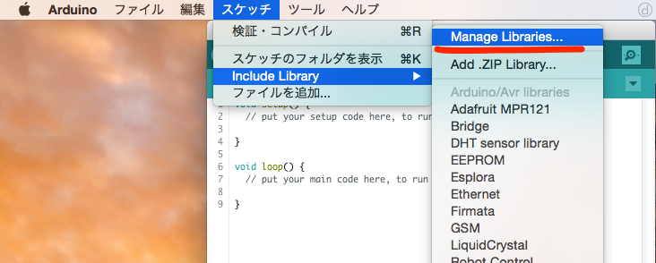

はじめに
ようこそ！
このサイトでは、Arduinoでいろいろ作って、遊びたい人のために様々なサンプルを紹介しています。
まずは動画を眺めて、面白そうな作品があったら、配線を参考にArduinoと部品をつないで、サンプルコードを書き込んでみてください。
そして、自分なりのアイデアでコードを書き換えてみてください。
Arduinoプログラミングに必要なもの
ハードウェア


ソフトウェア
本サイトでは、下記のソフトウェアの使用を推奨しています。

Arduino IDE
プログラムの作成から、Arduinoへのプログラムの書き込みまで行えます。
Arduinoプログラミングの流れ
配線&プログラミング
サンプルを参考に、配線とプログラムを編集する。
プログラムの保存
作成したプログラムをローカルPCに保存する。
詳しくは、 こちら
Arduino IDEでファイル読込
BlocklyDuino Editorで保存したファイルをArduino IDEから読み込む。
Arduino IDEの外部エディタ機能を有効にすると、一度読み込んだファイルを編集すると、自動的に読み込んでくれるよ。
詳しくは、 こちら
ライブラリの追加
必要に応じて、ライブラリをArduino IDEに追加する。
詳しくは、 こちら
Ardunoへのプログラム書き込み
プログラムをArduinoへ書き込む。
エラーがでたら、プログラムのコードを見直す。
具体的なやり方
BlocklyDuino Editorでのファイル保存
1. まず、保存先となるフォルダを選択するダイアログが表示される。
2. その後、ファイル名を入力するためのダイアログが表示される。
3. ファイルが保存できると、指定したフォルダの中にArduinoが取り扱うinoファイルとBlocklyDuinoのxmlファイルが保存される。
Arduino IDEの外部エディタ機能の有効化
1. Arduino IDEの設定画面を開く。
2. 外部エディタ機能にチェックを入れる。
3. 外部エディタ機能が有効になると、エディタ部分がグレーになり、編集できなくなる。
ライブラリの追加
1. Arduino IDEのライブラリ管理を開く。
2. 必要なライブラリを検索する。
3. 必要なライブラリが見つかれば、インストールする。
4. ちゃんとインストールできると、下のように表示される。